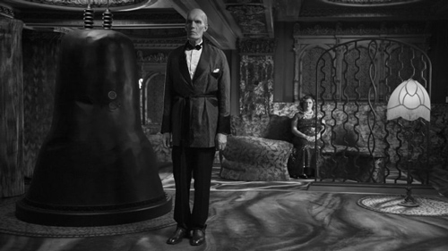

David Lynch just unleashed what's arguably television's WTF-weirdest and most ambitious hour ever.

Sometimes, after witnessing a work of art that truly challenges and moves us, it's easier to be flippant than philosophical. So let's get the flippancy out of our system right away. After all, following an hour of television like last night's episode of Twin Peaks, people are bound to have questions. "What did I just witness?", for example. Or "How did David Lynch and Mark Frost convince Showtime to put that on the air?" Or "Does Trent Reznor have any idea how cool he looks in a pair of sunglasses?"
With the exception of the last bit, which is highly relevant to the future of, per the credits, "The" Nine Inch Nails as an aesthetic entity, the answers matter far less than the experience that raised the questions in the first place. Without fear of contradiction, this was quite possibly the most artistically ambitious hour of narrative fiction in the history of television. You don't even have to be a TV snob to say so; there aren't a lot of films in this league either. Somehow, Showtime – the network that brought you seven seasons of Californication – aired an episode that tried to beat everyone from Stanley Kubrick to Stan Brakhage at their own game.
Plotwise, it's easy enough to summarize. In the present day, we follow Dale Cooper's evil doppelganger and his associate Ray as they make their escape from a South Dakota prison. When his underling starts making noise about withholding vital information from him for a price, the False Coop pulls a gun on the guy, only to discover he's been double-crossed. His traitorous henchman fills him full of lead ... and then a near-silent procession of shaggy-haired, coal-black demon-men from the Black Lodge assembles to perform a bizarre ritual with his body. They coax the demonic Bob from the corpse in a grotesque globule, forcing his horrified killer to flee in their getaway car. He calls his apparent boss, Phillip Jeffries (the Lodge-tainted FBI agent played in Twin Peaks: Fire Walk With Me by David Bowie) with the ambiguous news of the evening's events.
We then flash back to July 16, 1945, in White Sands, New Mexico – the time and place when the Manhattan Project reached its grim conclusion by detonating the first atomic bomb. Accompanied by the apocalyptic strings of avant-garde composer Krzysztof Penderecki's "Threnody for the Victims of Hiroshima" – the people who would soon pay the price for this weaponized scientific breakthrough – Lynch takes us on a dizzying, dazzling journey through the fires of creation, or of Hell; the difference is negligible. Starfields and nebulae, liquid and flame, the buzzing of insects and the birth of worlds: they're all there, waiting for us to traverse them.
And so is Bob. We witness the birth of the demon who possessed Leland Palmer and killed his daughter Laura as he's extruded in ectoplasm from a white creature not unlike the one who massacred the couple in the season premiere. We see a gaggle of his blackened, bearded familiars prepare for his coming at a convenience store, an oft-referenced site of Black Lodge activity. Eventually, in 1956, we witness a frog-insect hybrid emerge from a stone-like egg and slither its way down the throat of a swoony teenage girl as she sleeps. The same one, by the way, who's hypnotized by a poem ("This is the water, and this is the well …") broadcast over a radio station that's been commandeered by an ashen-faced, cigarette-toting creature that crushes its victims skulls with a single bare hand.
Against all this horror stands the Giant (or as he's billed this season, "?????"), played by Carl Struycken. In a colossal tower atop an enormous cliff in the purple ocean we saw the real Cooper trapped in several episodes ago, he and a glamorous young woman are alerted to the bomb's detonation and Bob's creation. In response, he levitates into the air, beaming a golden stream of stars out of his head. From this glowing cloud emerges a crystal ball with the face of Laura Palmer inside. His female companion catches the floating orb, kisses it and tosses it upward into an elaborate tubular machine that then shoots the Laura-ball into or black-and-white world. Has Ms. Palmer been created as a counterbalance to Bob? Or is she just the average human chosen by cosmic forces to stand against him?
What is clear is the birth of Bob's bracing message. This disturbing, disorienting episode explicitly ties the demon's creation to the atom bomb's detonation, an act of man that rivals, or betters, the dark deeds of any religion's devil. The connection is no accident. Nor is it without precedent: Ever since the original Twin Peaks introduced supernatural horror into its director's body of work, the link between otherworldly evil and real-world brutality has been a constant. Lynch treats human cruelty like a rupture in the fabric of reality through which demons of every shape and size can enter — think Lost Highway's white-faced Mystery Man, Mulholland Drive's monstrous dumpster-dweller and gibbering old folks, Inland Empire's balloon-faced Phantom and, of course, the dwellers of the Black Lodge. They all feed on and perpetuate the cycle of violence that enabled their emergence.
Some experiences and emotions are so cataclysmic that our everyday imagery and vocabulary cannot possibly do them justice; monsters give shape to those feelings, the same way an aria in an opera or a song in a musical gives human passion a voice. In crafting creatures like that denim-clad monster and his dark brethren, Lynch is doing what all great horror does. He's taking the agony and fear we already feel and, like Dr. Frankenstein in his lightning-streaked laboratory, bringing it to unholy life. The real question this episode asks, then, is no more or less than the one pilot Robert A. Lewis asked when he dropped the atomic bomb on Hiroshima: "My God, what have we done?"